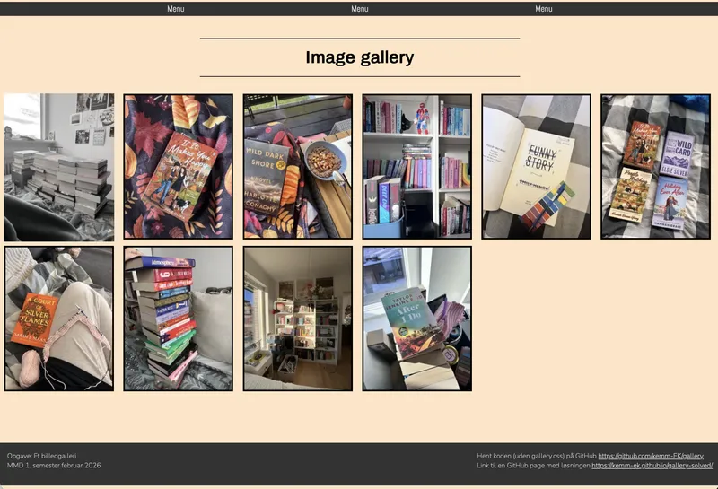

tema 2 - grundlæggende web
Under vores første tema lærte vi alt om det grundlæggende inden for webudvikling. Fokus var på at opbygge en forståelse for, hvordan websites bliver skabt, og hvilke teknologier der ligger bag. Vi startede med en introduktion til HTML (HyperText Markup Language), hvor vi lærte at arbejde i Visual Studio Code og fik en forståelse for den grundlæggende struktur i et website. HTML fungerer som fundamentet for en hjemmeside og bruges til at organisere og strukturere indholdet. Da vi havde styr på HTML, begyndte vi at arbejde med CSS. Hvor HTML står for struktur, bruges CSS til præsentation og design. CSS giver mulighed for at kontrollere farver, typografi, placering af elementer og det visuelle udtryk på en hjemmeside. Ved at kombinere HTML og CSS kunne vi begynde at skabe websites, der både fungerede teknisk og havde et gennemarbejdet design. Den viden brugte vi i vores første projekt, hvor vi udviklede et mobile-first website. Her lærte vi vigtigheden af først at designe og udvikle til mindre skærme, før løsningen tilpasses større enheder.

Computer og grids
For at kunne videreudvikle vores mobile website til desktop lærte vi om CSS Grid. Vi arbejdede med forskellige grid-strukturer og fik forståelse for, hvordan de kan bruges til at organisere indhold og skabe et mere overskueligt layout for brugeren. Derudover lærte vi, hvordan grids implementeres og styres gennem HTML og CSS. Som en del af forløbet ombyggede vi vores mobile website til en desktopversion ved hjælp af grids. Efterfølgende lavede vi et billedgalleri som en ekstra øvelse, hvor vi fik mulighed for at arbejde endnu mere med grid-systemer og samtidig udvide vores CSS-kompetencer. Gennem dette tema opdagede jeg, hvor meget jeg faktisk interesserer mig for kodning. Det var mit første møde med både HTML og CSS, og jeg blev positivt overrasket over, hvor spændende jeg syntes arbejdet var. Selvom der var meget nyt at lære, oplevede jeg processen som motiverende, og temaet gjorde mig nysgerrig på de mere avancerede emner, vi skulle arbejde med senere på semesteret.

